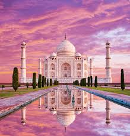

Taj Mahal üïå
The Taj Mahal is a 17th-century mausoleum in Agra, India, built by Emperor Shah Jahan for his beloved wife Mumtaz Mahal. It is renowned for its majestic white marble domes, symmetrical gardens, and intricate inlay work.
"The Taj Mahal stands as an eternal symbol of love, beauty, and architectural brilliance."
Gallery üïå
